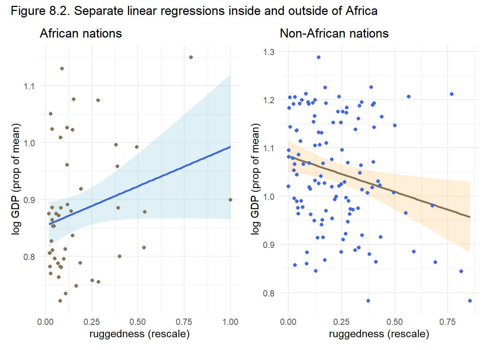
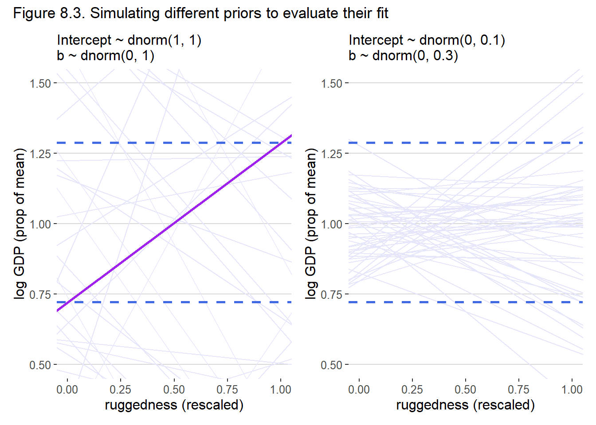
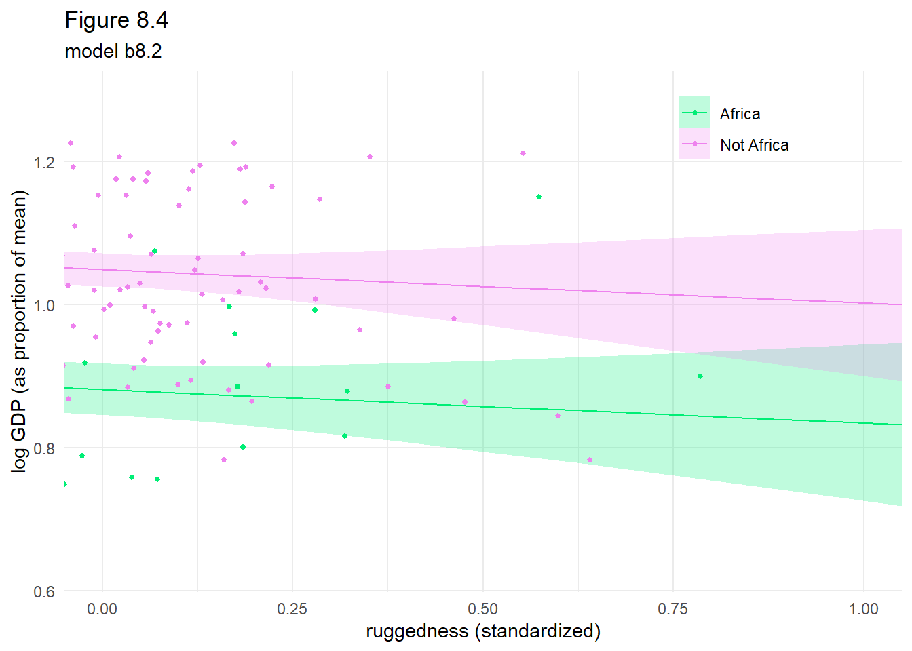
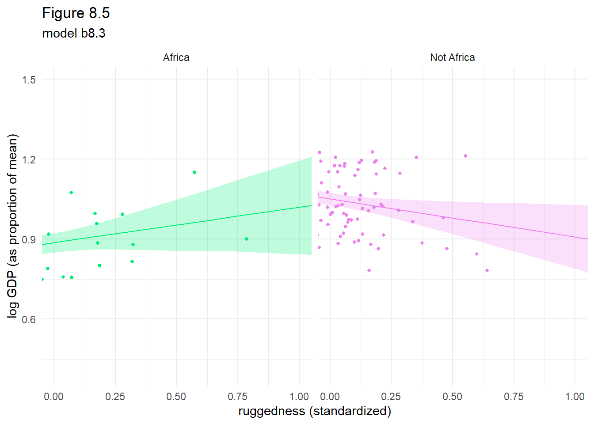
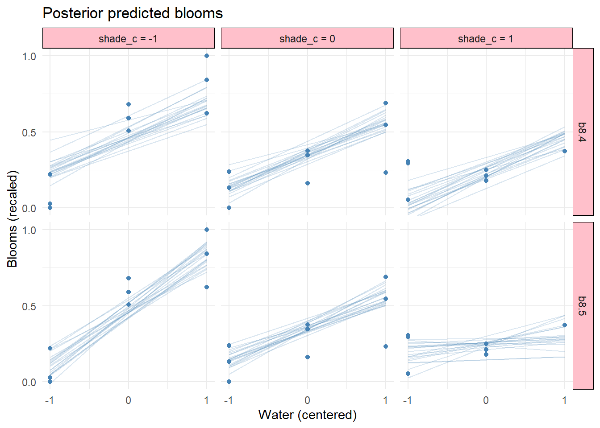
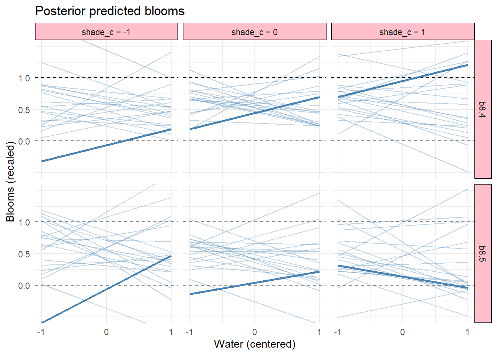

data(rugged)
d <- rugged |>
filter(complete.cases(rgdppc_2000)) |>
mutate(log_gdp = log(rgdppc_2000),
is_africa = if_else(cont_africa == 1, "Africa", "Not Africa"),
is_africa = as.factor(is_africa))
rm(rugged)
# NOTE: Make sure as.vector() is outside of scale().
# Otherwise it keeps the vector as an array and causes all sort of little
# problems. In particular, a very obscure, fine error message
# in doing brms fit for b8.2.
dd <- d |>
drop_na(rgdppc_2000) |>
mutate(log_gdp_s = log_gdp / mean(log_gdp),
rugged_s = scales::rescale(rugged),
rugged_sc = as.vector(scale(rugged_s, center = TRUE, scale = FALSE)))
# glimpse(dd)8 Conditional Manatees
8.1 Building an interaction
Load the data, log transform the gdp measure, remove incomplete cases and create a character column for Africa or Not Africa.
and we use the following DAG, see overthinking box in introduction of section 8.1 for another possible DAG.
dag <- list()
dag$coords <- tibble(name = c("C", "G", "R", "U"),
x = c(3, 2, 1, 2),
y = c(2, 2, 2, 1))
dag$g <- dagify(
G ~ C + R + U,
R ~ U,
latent = "U",
outcome = "G",
coords = dag$coords)
p <- list()
p$g <- dag$g |>
ggdag_status(aes(color = status), as_factor = TRUE, node_size = 14,
text_size = 4, text_col = "midnightblue") +
# geom_dag_point(aes(color = status), size = 3, text = FALSE) +
# geom_dag_text(color = "midnightblue") +
scale_color_paletteer_d("khroma::light",
na.value = "honeydew3",
direction = 1) +
theme_dag() +
theme(legend.position = c(0.8, 0.2)) +
labs(title = "African nations",
subtitle = "Section 8.1")
p$g
p1 <- dd |>
filter(grepl("^africa$", x = is_africa, ignore.case = TRUE)) |>
ggplot(aes(x = rugged_s, y = log_gdp_s)) +
geom_smooth(method = "lm", formula = y ~ x, fill = "lightblue", color = "royalblue") +
geom_point(color = "burlywood4") +
theme_minimal() +
labs(title = "African nations", x = "ruggedness (rescale)",
y = "log GDP (prop of mean)")
p2 <- dd |>
filter(!grepl("^africa$", x = is_africa, ignore.case = TRUE)) |>
ggplot(aes(x = rugged_s, y = log_gdp_s)) +
geom_smooth(method = "lm", formula = y ~ x, fill = "burlywood1", color = "burlywood4") +
geom_point(color = "royalblue") +
theme_minimal() +
labs(title = "Non-African nations", x = "ruggedness (rescale)",
y = "log GDP (prop of mean)")
msg <- "Figure 8.2. Separate linear regressions inside and outside of Africa"
p1 + p2 + plot_annotation(title = msg)
8.1.1 Making a rugged model
and split the data into countries from Africa and not.
lst <- d |>
split(d$is_africa)
# str(lst)and now creating a simple univariate model
\[ \begin{align*} \log{(log\_gdp\_s_i)} &\sim \mathcal{N}(\mu_i, \sigma) \\ \mu_i &= \alpha + \beta \cdot rugged\_sc_i \\ \alpha &\sim \mathcal{N}(1, 1) \\ \beta &\sim \mathcal{N}(0, 1) \\ \sigma &\sim \mathcal{Exp}(1) \end{align*} \]
Now fit the model. Get the prior samples by using sample_prior = TRUE
tictoc::tic(msg = sprintf("run time of %s, use the cache.", "60 secs."))
b8.1a <- xfun::cache_rds({
out <- brm(
data = dd,
family = gaussian,
log_gdp_s ~ 1 + rugged_sc,
prior = c(
prior(normal(1, 1), class = Intercept),
prior(normal(0, 1), class = b),
prior(exponential(1), class = sigma)),
sample_prior = TRUE,
iter = 2000, warmup = 1000, chains = 4, cores = detectCores(),
seed = 8)
out <- brms::add_criterion(out, criterion = c("waic", "loo"))},
file = "ch08_b08_01a")
tictoc::toc()run time of 60 secs., use the cache.: 0.14 sec elapsedposterior_summary(b8.1a) Estimate Est.Error Q2.5 Q97.5
b_Intercept 1.000081472 0.010482916 0.97889128 1.0203198
b_rugged_sc 0.002595453 0.057174334 -0.11293461 0.1170604
sigma 0.138208672 0.007877334 0.12389342 0.1547571
prior_Intercept 0.979374473 0.995637434 -0.99669567 2.9484634
prior_b -0.002211324 1.015265447 -1.98742024 1.9703342
prior_sigma 1.024724984 1.034587795 0.02633572 3.7691684
lprior -1.977778085 0.008367267 -1.99533339 -1.9628471
lp__ 91.741521467 1.286736578 88.29902430 93.1966649the estimates are described in section 8.1.1 of McElreath but he seems to have
set.seed(8)
b8.1a_prior <- prior_samples(b8.1a)Warning: 'prior_samples' is deprecated. Please use 'prior_draws' instead.pd <-
b8.1a_prior |>
slice_sample(n = 50) |>
tibble::rownames_to_column() |>
expand(nesting(rowname, Intercept, b), rugged_sc = c(-2, 2)) |>
mutate(log_gdp_s = Intercept + b * rugged_sc,
rugged_s = rugged_sc + mean(dd$rugged_s))
# glimpse(pd)
pd_estimate_fixed <- min(dd$log_gdp_s)
pd_estimate_b <- diff(range(dd$log_gdp_s))
p1 <- ggplot(pd, aes(x = rugged_s, y = log_gdp_s, group = rowname)) +
geom_line(color = "lavender") +
geom_hline(yintercept = range(dd$log_gdp_s),
size = 1, linetype = 2, color = "royalblue") +
geom_abline(intercept = pd_estimate_fixed, slope = pd_estimate_b,
color = "purple", size = 1) +
coord_cartesian(xlim = c(0, 1), ylim = c(0.5, 1.5)) +
labs(
subtitle = "Intercept ~ dnorm(1, 1)\nb ~ dnorm(0, 1)",
x = "ruggedness (rescaled)",
y = "log GDP (prop of mean)") +
ggthemes::theme_hc()Warning: Using `size` aesthetic for lines was deprecated in ggplot2 3.4.0.
ℹ Please use `linewidth` instead.# p1Now using the prior where we want the intercept to be around 1 with extremes from 0.8 to 1.2 (i.e. a mean of 1 and sd of 0.1) and the slope to have extremes about \(\pm 0.6\), that is a mean of 0 with sd of 0.3 (i.e. 2 sd with sd = 3 from a mean of 0).
tictoc::tic(msg = sprintf("run time of %s, use the cache.", "60 secs."))
b8.1b <- xfun::cache_rds({
out <- update(
b8.1a,
newdata = dd,
prior = c(
prior(normal(1, 0.1), class = Intercept),
prior(normal(0, 0.3), class = b),
prior(exponential(1), class = sigma)),
sample_prior = TRUE,
seed = 8)
out <- brms::add_criterion(out, criterion = c("waic", "loo"))},
file = "ch08_b08_01b")
tictoc::toc()run time of 60 secs., use the cache.: 0.11 sec elapsedposterior_summary(b8.1b) Estimate Est.Error Q2.5 Q97.5
b_Intercept 1.000166075 0.01040321 0.98023034 1.0213012
b_rugged_sc 0.001615194 0.05591031 -0.10967419 0.1118792
sigma 0.138231472 0.00744684 0.12489902 0.1537012
prior_Intercept 1.003443969 0.09940477 0.80845829 1.1954058
prior_b 0.005170575 0.30228072 -0.56945691 0.5975727
prior_sigma 0.971864509 0.98132613 0.02340771 3.5326634
lprior 1.507661382 0.02871990 1.42927885 1.5384032
lp__ 95.316575288 1.25356563 92.00799294 96.7069674set.seed(8)
b8.1b_prior <- prior_samples(b8.1b)Warning: 'prior_samples' is deprecated. Please use 'prior_draws' instead.pd <-
b8.1b_prior |>
slice_sample(n = 50) |>
tibble::rownames_to_column() |>
expand(nesting(rowname, Intercept, b), rugged_sc = c(-2, 2)) |>
mutate(log_gdp_s = Intercept + b * rugged_sc,
rugged_s = rugged_sc + mean(dd$rugged_s))
# glimpse(pd)
p2 <- ggplot(pd, aes(x = rugged_s, y = log_gdp_s, group = rowname)) +
geom_line(color = "lavender") +
geom_hline(yintercept = range(dd$log_gdp_s),
size = 1, linetype = 2, color = "royalblue") +
coord_cartesian(xlim = c(0, 1), ylim = c(0.5, 1.5)) +
labs(
subtitle = "Intercept ~ dnorm(0, 0.1)\nb ~ dnorm(0, 0.3)",
x = "ruggedness (rescaled)",
y = "log GDP (prop of mean)") +
ggthemes::theme_hc()
# p2msg <- "Figure 8.3. Simulating different priors to evaluate their fit"
p1 + p2 + plot_annotation(title = msg)
8.1.2 Adding an indicator variable isn’t enough
We add the cid variable to identify the continent.
dd <- dd |>
mutate(cid = as.factor(if_else(cont_africa == 1, "1", "2")))and fitting the data to the following model
\[ \begin{align*} \log{(log\_gdp\_s_i)} &\sim \mathcal{N}(\mu_i, \sigma) \\ \mu_i &= \alpha[cid] + \beta \cdot rugged\_sc_i \\ \alpha &\sim \mathcal{N}(1, 0.1) \\ \beta &\sim \mathcal{N}(0, 0.3) \\ \sigma &\sim \mathcal{Exp}(1) \end{align*} \]
tictoc::tic(msg = sprintf("run time of %s, use the cache.", "60 secs."))
b8.2 <- xfun::cache_rds({
out <- brm(
data = dd,
family = gaussian,
log_gdp_s ~ 0 + cid + rugged_sc,
prior = c(
prior(normal(1, 0.1), class = b, coef = cid1),
prior(normal(1, 0.1), class = b, coef = cid2),
prior(normal(0, 0.3), class = b, coef = rugged_sc),
prior(exponential(1), class = sigma)),
sample_prior = TRUE,
iter = 2000, warmup = 1000, chains = 4, cores = detectCores(),
seed = 8)
out <- brms::add_criterion(out, criterion = c("waic", "loo"))},
file = "ch08_b08_02")
tictoc::toc()run time of 60 secs., use the cache.: 0.19 sec elapsedsummary(b8.2) Family: gaussian
Links: mu = identity; sigma = identity
Formula: log_gdp_s ~ 0 + cid + rugged_sc
Data: dd (Number of observations: 170)
Draws: 4 chains, each with iter = 2000; warmup = 1000; thin = 1;
total post-warmup draws = 4000
Population-Level Effects:
Estimate Est.Error l-95% CI u-95% CI Rhat Bulk_ESS Tail_ESS
cid1 0.88 0.02 0.85 0.91 1.00 4031 2847
cid2 1.05 0.01 1.03 1.07 1.00 4281 2812
rugged_sc -0.05 0.05 -0.14 0.04 1.00 4083 2820
Family Specific Parameters:
Estimate Est.Error l-95% CI u-95% CI Rhat Bulk_ESS Tail_ESS
sigma 0.11 0.01 0.10 0.13 1.00 4126 2962
Draws were sampled using sampling(NUTS). For each parameter, Bulk_ESS
and Tail_ESS are effective sample size measures, and Rhat is the potential
scale reduction factor on split chains (at convergence, Rhat = 1).and measuring the models’ performance
loo::loo_compare(b8.1b, b8.2, criterion = "waic") |> print(simplify = FALSE) elpd_diff se_diff elpd_waic se_elpd_waic p_waic se_p_waic waic se_waic
b8.2 0.0 0.0 126.1 7.4 4.1 0.8 -252.3 14.8
b8.1b -31.7 7.3 94.5 6.5 2.5 0.3 -189.0 13.0 with thew model weights
brms::model_weights(b8.1b, b8.2) |>
round(digits = 2)b8.1b b8.2
0.03 0.97 and create the fitted data used for the plot
tidybayes::get_variables(b8.2) [1] "b_cid1" "b_cid2" "b_rugged_sc"
[4] "sigma" "prior_b_cid1" "prior_b_cid2"
[7] "prior_b_rugged_sc" "prior_sigma" "lprior"
[10] "lp__" "accept_stat__" "stepsize__"
[13] "treedepth__" "n_leapfrog__" "divergent__"
[16] "energy__" b8.2_seq <- crossing(cid = as.factor(1:2),
rugged_sc = seq(from = -0.2, to = 1.2, length.out = 30)) |>
mutate(rugged_sc = as.vector(scale(rugged_sc)))
# glimpse(b8.2_seq)
b8.2_fitted <- fitted(b8.2, newdata = b8.2_seq, probs = c(0.015, 0.985)) |>
data.frame() |>
bind_cols(b8.2_seq) |>
mutate(is_africa = if_else(cid == 1, "Africa", "Not Africa")) |>
mutate(is_africa = as.factor(is_africa))
# glimpse(b8.2_fitted)ggplot(dd, aes(x = rugged_sc, y = log_gdp_s, fill = is_africa, color = is_africa)) +
geom_smooth(data = b8.2_fitted, aes(x = rugged_sc, y = Estimate, ymin = Q1.5, ymax = Q98.5),
stat = "identity",
alpha = 1/4, size = 1/2) +
geom_point(size = 1) +
scale_fill_manual(values = c("Africa" = "springgreen2", "Not Africa" = "violet")) +
scale_color_manual(values = c("Africa" = "springgreen2", "Not Africa" = "violet")) +
coord_cartesian(xlim = c(0, 1)) +
theme_minimal() +
theme(legend.position = c(.80, .90),
legend.title = element_blank()) +
labs(title = "Figure 8.4",
subtitle = "model b8.2",
x = "ruggedness (standardized)",
y = "log GDP (as proportion of mean)")
8.1.3 Adding an interaction does work
\[ \begin{align*} \log{(log\_gdp\_s_i)} &\sim \mathcal{N}(\mu_i, \sigma) \\ \mu_i &= \alpha_{[cid]} + \beta_{[cid]} \cdot rugged\_sc_i \\ \alpha &\sim \mathcal{N}(1, 0.1) \\ \beta &\sim \mathcal{N}(0, 0.3) \\ \sigma &\sim \mathcal{Exp}(1) \end{align*} \]
tictoc::tic(msg = sprintf("run time of %s, use the cache.", "70 secs."))
b8.3 <- xfun::cache_rds({
out <- brm(data = dd,
family = gaussian,
formula = bf(log_gdp_s ~ 0 + a + b * rugged_sc,
a ~ 0 + cid,
b ~ 0 + cid,
nl = TRUE),
prior = c(prior(normal(1, 0.1), class = b, coef = cid1, nlpar = a),
prior(normal(1, 0.1), class = b, coef = cid2, nlpar = a),
prior(normal(0, 0.3), class = b, coef = cid1, nlpar = b),
prior(normal(0, 0.3), class = b, coef = cid2, nlpar = b),
prior(exponential(1), class = sigma)),
iter = 2000, warmup = 1000, chains = 4, cores = detectCores(),
seed = 8)
out <- brms::add_criterion(out, criterion = c("waic", "loo"))},
file = "ch08_b08_03")
tictoc::toc()run time of 70 secs., use the cache.: 0.2 sec elapsedsummary(b8.3) Family: gaussian
Links: mu = identity; sigma = identity
Formula: log_gdp_s ~ 0 + a + b * rugged_sc
a ~ 0 + cid
b ~ 0 + cid
Data: dd (Number of observations: 170)
Draws: 4 chains, each with iter = 2000; warmup = 1000; thin = 1;
total post-warmup draws = 4000
Population-Level Effects:
Estimate Est.Error l-95% CI u-95% CI Rhat Bulk_ESS Tail_ESS
a_cid1 0.89 0.02 0.85 0.92 1.00 4926 3441
a_cid2 1.05 0.01 1.03 1.07 1.00 5650 3326
b_cid1 0.13 0.08 -0.02 0.28 1.00 4922 3327
b_cid2 -0.14 0.06 -0.25 -0.03 1.00 4294 3031
Family Specific Parameters:
Estimate Est.Error l-95% CI u-95% CI Rhat Bulk_ESS Tail_ESS
sigma 0.11 0.01 0.10 0.13 1.00 4670 3244
Draws were sampled using sampling(NUTS). For each parameter, Bulk_ESS
and Tail_ESS are effective sample size measures, and Rhat is the potential
scale reduction factor on split chains (at convergence, Rhat = 1).loo::loo_compare(b8.1b, b8.2, b8.3, criterion = "waic") |> print(simplify = FALSE) elpd_diff se_diff elpd_waic se_elpd_waic p_waic se_p_waic waic se_waic
b8.3 0.0 0.0 129.6 7.3 4.9 0.8 -259.2 14.6
b8.2 -3.5 3.2 126.1 7.4 4.1 0.8 -252.3 14.8
b8.1b -35.1 7.5 94.5 6.5 2.5 0.3 -189.0 13.0 with thew model weights
brms::model_weights(b8.1b, b8.2, b8.3) |>
round(digits = 2)b8.1b b8.2 b8.3
0.00 0.13 0.87 8.1.4 Plotting the interaction
b8.3_seq <- crossing(cid = as.factor(1:2),
rugged_sc = seq(from = -0.2, to = 1.2, length.out = 30)) |>
mutate(rugged_sc = as.vector(scale(rugged_sc)))
glimpse(b8.3_seq)Rows: 60
Columns: 2
$ cid <fct> 1, 1, 1, 1, 1, 1, 1, 1, 1, 1, 1, 1, 1, 1, 1, 1, 1, 1, 1, 1, …
$ rugged_sc <dbl> -1.66122768, -1.54666026, -1.43209283, -1.31752540, -1.20295…b8.3_fitted <- fitted(b8.3, newdata = b8.3_seq, probs = c(0.015, 0.985)) |>
data.frame() |>
bind_cols(b8.3_seq) |>
mutate(is_africa = if_else(cid == 1, "Africa", "Not Africa")) |>
mutate(is_africa = as.factor(is_africa))
glimpse(b8.3_fitted)Rows: 60
Columns: 7
$ Estimate <dbl> 0.6668773, 0.6820424, 0.6972076, 0.7123727, 0.7275378, 0.742…
$ Est.Error <dbl> 0.12461280, 0.11599999, 0.10739953, 0.09881465, 0.09024980, …
$ Q1.5 <dbl> 0.4035901, 0.4376822, 0.4716878, 0.5043084, 0.5376742, 0.570…
$ Q98.5 <dbl> 0.9424758, 0.9393188, 0.9344113, 0.9301145, 0.9271121, 0.923…
$ cid <fct> 1, 1, 1, 1, 1, 1, 1, 1, 1, 1, 1, 1, 1, 1, 1, 1, 1, 1, 1, 1, …
$ rugged_sc <dbl> -1.66122768, -1.54666026, -1.43209283, -1.31752540, -1.20295…
$ is_africa <fct> Africa, Africa, Africa, Africa, Africa, Africa, Africa, Afri…ggplot(dd, aes(x = rugged_sc, y = log_gdp_s, fill = is_africa, color = is_africa)) +
geom_smooth(data = b8.3_fitted, aes(x = rugged_sc, y = Estimate, ymin = Q1.5, ymax = Q98.5),
stat = "identity",
alpha = 1/4, size = 1/2) +
geom_point(size = 1) +
scale_fill_manual(values = c("Africa" = "springgreen2", "Not Africa" = "violet")) +
scale_color_manual(values = c("Africa" = "springgreen2", "Not Africa" = "violet")) +
coord_cartesian(xlim = c(0, 1)) +
theme_minimal() +
theme(legend.position = "none") +
labs(title = "Figure 8.5",
subtitle = "model b8.3",
x = "ruggedness (standardized)",
y = "log GDP (as proportion of mean)") +
facet_wrap(~ is_africa)
8.2 Symmetry of interactions
8.3 Continuous interactions
8.3.1 A winter flower
data(tulips, package = "rethinking")
d <- tulips |>
mutate(blooms_r = scales::rescale(blooms),
water_c = as.vector(scale(water, scale = FALSE)),
shade_c = as.vector(scale(shade, scale = FALSE)))
rm(tulips)8.3.2 The models
8.3.2.1 Calibrating the priors
Our preliminary model, as a first jest in terms of prior is
\[ \begin{align*} blooms\_r_i &\sim \mathcal{N}(\mu_i, \sigma) \\ \mu_i &= \alpha + \beta_W \cdot water\_c_i+ \beta_S \cdot shade\_c_i \\ \alpha &\sim \mathcal{N}(0.5, 1) \\ \beta_W &\sim \mathcal{N}(0, 1) \\ \beta_S &\sim \mathcal{N}(0, 1) \\ \sigma &\sim \mathcal{Exp}(1) \end{align*} \]
When looking at the data with skimr::skim() to evaluate the priors we obtain
skimr::skim(d)| Name | d |
| Number of rows | 27 |
| Number of columns | 7 |
| _______________________ | |
| Column type frequency: | |
| factor | 1 |
| numeric | 6 |
| ________________________ | |
| Group variables | None |
Variable type: factor
| skim_variable | n_missing | complete_rate | ordered | n_unique | top_counts |
|---|---|---|---|---|---|
| bed | 0 | 1 | FALSE | 3 | a: 9, b: 9, c: 9 |
Variable type: numeric
| skim_variable | n_missing | complete_rate | mean | sd | p0 | p25 | p50 | p75 | p100 | hist |
|---|---|---|---|---|---|---|---|---|---|---|
| water | 0 | 1 | 2.00 | 0.83 | 1 | 1.00 | 2.00 | 3.00 | 3.00 | ▇▁▇▁▇ |
| shade | 0 | 1 | 2.00 | 0.83 | 1 | 1.00 | 2.00 | 3.00 | 3.00 | ▇▁▇▁▇ |
| blooms | 0 | 1 | 128.99 | 92.68 | 0 | 71.12 | 111.04 | 190.30 | 361.66 | ▅▇▂▂▁ |
| blooms_r | 0 | 1 | 0.36 | 0.26 | 0 | 0.20 | 0.31 | 0.53 | 1.00 | ▅▇▂▂▁ |
| water_c | 0 | 1 | 0.00 | 0.83 | -1 | -1.00 | 0.00 | 1.00 | 1.00 | ▇▁▇▁▇ |
| shade_c | 0 | 1 | 0.00 | 0.83 | -1 | -1.00 | 0.00 | 1.00 | 1.00 | ▇▁▇▁▇ |
We see that blooms_r must be between 0 and 1. The prior used assigns most probability outside of that range
m <- 0.5
s <- 1
pnorm(q = 0, mean = m, sd = s) + pnorm(q = 1, mean = m, sd = s, lower.tail = FALSE)[1] 0.6170751lets say that we we want only 5% of the values outside the range (2.5% on each side) then, going with trial an error, the boundaries would be about
m <- 0.5
s <- 0.25
pnorm(q = 0, mean = m, sd = s) + pnorm(q = 1, mean = m, sd = s, lower.tail = FALSE)[1] 0.04550026Therefore we will use
\[
\alpha \sim \mathcal{N}(0.5, 0.25)
\] and since the range for water_c and shade_c is -1 to 1 then we can use the same logic for both as follows
m <- 0
s <- 0.25
pnorm(q = -1, mean = m, sd = s) + pnorm(q = 1, mean = m, sd = s, lower.tail = FALSE)[1] 6.334248e-05which means virtually almost all values will be between -1 and 1. When looking at the skimr::skim() summary we see that there are many extreme values so this prior covers this situation well.
Therefore, our model with a little more informative priors is
\[ \begin{align*} blooms\_r_i &\sim \mathcal{N}(\mu_i, \sigma) \\ \mu_i &= \alpha + \beta_W \cdot water\_c_i+ \beta_S \cdot shade\_c_i \\ \alpha &\sim \mathcal{N}(0.5, 0.25) \\ \beta_W &\sim \mathcal{N}(0, 0.25) \\ \beta_S &\sim \mathcal{N}(0, 0.25) \\ \sigma &\sim \mathcal{Exp}(1) \end{align*} \]
and we fit that model to the data
tictoc::tic(msg = sprintf("run time of %s, use the cache.", "80 secs."))
b8.4 <- xfun::cache_rds({
out <- brm(data = d,
family = gaussian,
formula = blooms_r ~ 1 + water_c + shade_c,
prior = c(prior(normal(0.5, 0.25), class = Intercept),
prior(normal(0, 0.25), class = b),
prior(exponential(1), class = sigma)),
iter = 2000, warmup = 1000, chains = 4, cores = detectCores(),
seed = 8)
out <- brms::add_criterion(out, criterion = c("waic", "loo"))},
file = "ch08_b08_04")
tictoc::toc()run time of 80 secs., use the cache.: 0.22 sec elapsedsummary(b8.4) Family: gaussian
Links: mu = identity; sigma = identity
Formula: blooms_r ~ 1 + water_c + shade_c
Data: d (Number of observations: 27)
Draws: 4 chains, each with iter = 2000; warmup = 1000; thin = 1;
total post-warmup draws = 4000
Population-Level Effects:
Estimate Est.Error l-95% CI u-95% CI Rhat Bulk_ESS Tail_ESS
Intercept 0.36 0.03 0.29 0.43 1.00 4474 2850
water_c 0.21 0.04 0.12 0.29 1.00 4288 2729
shade_c -0.11 0.04 -0.19 -0.04 1.00 4074 2872
Family Specific Parameters:
Estimate Est.Error l-95% CI u-95% CI Rhat Bulk_ESS Tail_ESS
sigma 0.18 0.03 0.13 0.24 1.00 3076 2732
Draws were sampled using sampling(NUTS). For each parameter, Bulk_ESS
and Tail_ESS are effective sample size measures, and Rhat is the potential
scale reduction factor on split chains (at convergence, Rhat = 1).8.3.2.2 Adding an interaction
Using the notation \(\gamma_{W, i} = \beta_W+\beta_{WS} \cdot shade\_c_i\) we get the new model with interactions
\[ \begin{align*} blooms\_r_i &\sim \mathcal{N}(\mu_i, \sigma) \\ \mu_i &= \alpha + \gamma_{W, i} \cdot water\_c_i+ \beta_S \cdot shade\_c_i = \alpha + \beta_W \cdot water\_c_i + \beta_S \cdot shade\_c_i + \beta_{WS} \cdot shade\_c_i \cdot water\_c_i \\ \alpha &\sim \mathcal{N}(0.5, 0.25) \\ \beta_W &\sim \mathcal{N}(0, 0.25) \\ \beta_S &\sim \mathcal{N}(0, 0.25) \\ \beta_WS &\sim \mathcal{N}(0, 0.25) \\ \sigma &\sim \mathcal{Exp}(1) \end{align*} \]
and now fitting the model with interaction
tictoc::tic(msg = sprintf("run time of %s, use the cache.", "90 secs."))
b8.5 <- xfun::cache_rds({
out <- brm(data = d,
family = gaussian,
formula = blooms_r ~ 1 + water_c + shade_c + water_c:shade_c,
prior = c(prior(normal(0.5, 0.25), class = Intercept),
prior(normal(0, 0.25), class = b, coef = water_c),
prior(normal(0, 0.25), class = b, coef = shade_c),
prior(normal(0, 0.25), class = b, coef = "water_c:shade_c"),
prior(exponential(1), class = sigma)),
iter = 2000, warmup = 1000, chains = 4, cores = detectCores(),
seed = 8)
out <- brms::add_criterion(out, criterion = c("waic", "loo"))},
file = "ch08_b08_05")
tictoc::toc()run time of 90 secs., use the cache.: 0.21 sec elapsedsummary(b8.5) Family: gaussian
Links: mu = identity; sigma = identity
Formula: blooms_r ~ 1 + water_c + shade_c + water_c:shade_c
Data: d (Number of observations: 27)
Draws: 4 chains, each with iter = 2000; warmup = 1000; thin = 1;
total post-warmup draws = 4000
Population-Level Effects:
Estimate Est.Error l-95% CI u-95% CI Rhat Bulk_ESS Tail_ESS
Intercept 0.36 0.03 0.30 0.41 1.00 5577 2814
water_c 0.21 0.03 0.14 0.27 1.00 5021 2549
shade_c -0.11 0.03 -0.18 -0.05 1.00 4408 2719
water_c:shade_c -0.14 0.04 -0.22 -0.06 1.00 5722 3001
Family Specific Parameters:
Estimate Est.Error l-95% CI u-95% CI Rhat Bulk_ESS Tail_ESS
sigma 0.14 0.02 0.11 0.20 1.00 3104 2545
Draws were sampled using sampling(NUTS). For each parameter, Bulk_ESS
and Tail_ESS are effective sample size measures, and Rhat is the potential
scale reduction factor on split chains (at convergence, Rhat = 1).8.3.3 Plotting posterior predictions
See the very good details in Kurtz
# augment the data
points <-
d |>
expand(fit = c("b8.4", "b8.5"),
nesting(shade_c, water_c, blooms_r)) |>
mutate(x_grid = paste("shade_c =", shade_c),
y_grid = fit)
# redefine `nd`
nd <- crossing(shade_c = -1:1,
water_c = c(-1, 1))
# use `fitted()`
set.seed(8)
df <- rbind(fitted(b8.4, newdata = nd, summary = F, nsamples = 20),
fitted(b8.5, newdata = nd, summary = F, nsamples = 20)) |>
data.frame() |>
rlang::set_names(mutate(nd, name = paste(shade_c, water_c, sep = "_")) |>
pull()) |>
mutate(row = 1:n(),
fit = rep(c("b8.4", "b8.5"), each = n() / 2)) |>
pivot_longer(-c(row:fit), values_to = "blooms_r") |>
separate(name, into = c("shade_c", "water_c"), sep = "_") |>
mutate(shade_c = shade_c |> as.double(),
water_c = water_c |> as.double()) |>
# these will come in handy for `ggplot2::facet_grid()`
mutate(x_grid = paste("shade_c =", shade_c),
y_grid = fit)Warning: Argument 'nsamples' is deprecated. Please use argument 'ndraws'
instead.
Warning: Argument 'nsamples' is deprecated. Please use argument 'ndraws'
instead.# glimpse(df)
ggplot(df, aes(x = water_c, y = blooms_r)) +
geom_line(aes(group = row), color = "steelblue", alpha = 1/5, size = 1/2) +
geom_point(data = points, color = "steelblue") +
scale_x_continuous(breaks = c(-1, 0, 1)) +
scale_y_continuous(breaks = c(0, .5, 1)) +
coord_cartesian(xlim = c(-1, 1), ylim = c(0, 1)) +
theme_minimal() +
theme(legend.position = "none",
strip.background = element_rect(fill = "pink")) +
labs(title = "Posterior predicted blooms",
x = "Water (centered)", y = "Blooms (recaled)") +
facet_grid(y_grid ~ x_grid)
8.3.4 Plotting prior predictions
tictoc::tic(msg = sprintf("run time of %s, use the cache.", "20 secs."))
b8.4p <- xfun::cache_rds({
out <- update(b8.4,
sample_prior = "only",
iter = 2000, warmup = 1000, chains = 4, cores = detectCores(),
seed = 8)
out <- brms::add_criterion(out, criterion = c("waic", "loo"))},
file = "ch08_b08_04p")
tictoc::toc()run time of 20 secs., use the cache.: 0.22 sec elapsedtictoc::tic(msg = sprintf("run time of %s, use the cache.", "20 secs."))
b8.5p <- xfun::cache_rds({
out <- update(b8.5,
sample_prior = "only",
iter = 2000, warmup = 1000, chains = 4, cores = detectCores(),
seed = 8)
out <- brms::add_criterion(out, criterion = c("waic", "loo"))},
file = "ch08_b08_05p")
tictoc::toc()run time of 20 secs., use the cache.: 0.29 sec elapsedset.seed(8)
df <- rbind(fitted(b8.4p, newdata = nd, summary = F, nsamples = 20),
fitted(b8.5p, newdata = nd, summary = F, nsamples = 20)) |>
data.frame() |>
rlang::set_names(mutate(nd, name = paste(shade_c, water_c, sep = "_")) |> pull()) |>
mutate(row = rep(1:20, times = 2),
fit = rep(c("b8.4", "b8.5"), each = n() / 2)) |>
pivot_longer(-c(row:fit), values_to = "blooms_r") |>
separate(name, into = c("shade_c", "water_c"), sep = "_") |>
mutate(shade_c = shade_c |> as.double(),
water_c = water_c |> as.double()) |>
# these will come in handy for `ggplot2::facet_grid()`
mutate(x_grid = paste("shade_c =", shade_c),
y_grid = fit)Warning: Argument 'nsamples' is deprecated. Please use argument 'ndraws'
instead.
Warning: Argument 'nsamples' is deprecated. Please use argument 'ndraws'
instead.# glimpse(df)
ggplot(df, aes(x = water_c, y = blooms_r, group = row)) +
geom_hline(yintercept = 0:1, linetype = 2) +
geom_line(aes(alpha = row == 1, size = row == 1),
color = "steelblue") +
scale_size_manual(values = c(1/2, 1)) +
scale_alpha_manual(values = c(1/3, 1)) +
scale_x_continuous(breaks = c(-1, 0, 1)) +
scale_y_continuous(breaks = c(0, .5, 1)) +
coord_cartesian(xlim = c(-1, 1),
ylim = c(-0.5, 1.5)) +
theme_minimal() +
theme(legend.position = "none",
strip.background = element_rect(fill = "pink")) +
labs(title = "Posterior predicted blooms",
x = "Water (centered)", y = "Blooms (recaled)") +
facet_grid(y_grid ~ x_grid)